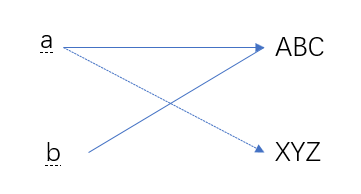

<!DOCTYPE html>


<html lang="zh-CN">


<head>
  <meta name="baidu-site-verification" content="codeva-NSg7ynviLa" />
  <meta charset="utf-8" />
    
  <meta name="viewport" content="width=device-width, initial-scale=1, maximum-scale=1" />
  <title>
    python基础及标准库 |  
  </title>
  <meta name="generator" content="hexo-theme-ayer">
  
  <link rel="shortcut icon" href="/images/mojie.jpg" />
  
  
<link rel="stylesheet" href="/dist/main.css">

  <link rel="stylesheet" href="https://cdn.jsdelivr.net/gh/Shen-Yu/cdn/css/remixicon.min.css">
  
<link rel="stylesheet" href="/css/custom.css">

  
  <script src="https://cdn.jsdelivr.net/npm/pace-js@1.0.2/pace.min.js"></script>
  
  

  

<link rel="alternate" href="/atom.xml" title="null" type="application/atom+xml">
</head>

</html>

<body>
  <div id="app">
    
      
    <main class="content on">
      <section class="outer">
  <article
  id="post-python基础及标准库"
  class="article article-type-post"
  itemscope
  itemprop="blogPost"
  data-scroll-reveal
>
  <div class="article-inner">
    
    <header class="article-header">
       
<h1 class="article-title sea-center" style="border-left:0" itemprop="name">
  python基础及标准库
</h1>
 

    </header>
     
    <div class="article-meta">
      <a href="/posts/81382537/" class="article-date">
  <time datetime="2023-01-14T03:02:14.000Z" itemprop="datePublished">2023-01-14</time>
</a> 
  <div class="article-category">
    <a class="article-category-link" href="/categories/%E6%95%B0%E6%8D%AE%E5%88%86%E6%9E%90/">数据分析</a> / <a class="article-category-link" href="/categories/%E6%95%B0%E6%8D%AE%E5%88%86%E6%9E%90/python/">python</a>
  </div>
  
<div class="word_count">
    <span class="post-time">
        <span class="post-meta-item-icon">
            <i class="ri-quill-pen-line"></i>
            <span class="post-meta-item-text"> 字数统计:</span>
            <span class="post-count">3.3k</span>
        </span>
    </span>

    <span class="post-time">
        &nbsp; | &nbsp;
        <span class="post-meta-item-icon">
            <i class="ri-book-open-line"></i>
            <span class="post-meta-item-text"> 阅读时长≈</span>
            <span class="post-count">13 分钟</span>
        </span>
    </span>
</div>
 
    </div>
      
    <div class="tocbot"></div>


  
    <div class="article-entry" itemprop="articleBody">
       
  <link rel="stylesheet" type="text/css" href="https://cdn.jsdelivr.net/hint.css/2.4.1/hint.min.css"><p>python基础部分备忘录。</p>
<span id="more"></span>
<h1>python 基础</h1>
<p>python 是一门解释型语言，无需编译。</p>
<h2 id="数据类型">数据类型</h2>
<p>不可变对象：数值（Numbers），字符串 （String) ， 元组 （Tuple) ，逻辑值 （Bool)</p>
<p>可变对象：列表（List)，字典（Dictionary），集合（Set)</p>
<h3 id="None">None</h3>
<p>None是Python的空值类型。如果一个函数没有明确的返回值，就会默认返回None。</p>
<p>判断是否为空值，要用 <code>is</code>(内存地址是否相同)</p>
<figure class="highlight python"><table><tr><td class="gutter"><pre><span class="line">1</span><br><span class="line">2</span><br><span class="line">3</span><br><span class="line">4</span><br></pre></td><td class="code"><pre><span class="line">In [<span class="number">37</span>]: a = <span class="literal">None</span></span><br><span class="line"></span><br><span class="line">In [<span class="number">38</span>]: a <span class="keyword">is</span> <span class="literal">None</span></span><br><span class="line">Out[<span class="number">38</span>]: <span class="literal">True</span></span><br></pre></td></tr></table></figure>
<p>None也常常作为函数的默认参数：</p>
<figure class="highlight python"><table><tr><td class="gutter"><pre><span class="line">1</span><br><span class="line">2</span><br><span class="line">3</span><br><span class="line">4</span><br><span class="line">5</span><br><span class="line">6</span><br><span class="line">7</span><br><span class="line">8</span><br><span class="line">9</span><br></pre></td><td class="code"><pre><span class="line">In [<span class="number">39</span>]: <span class="keyword">def</span> <span class="title function_">test</span>(<span class="params">a,b,c=<span class="literal">None</span></span>):</span><br><span class="line">    ...:     result = a + b</span><br><span class="line">        </span><br><span class="line">    ...:     <span class="keyword">if</span> c <span class="keyword">is</span> <span class="keyword">not</span> <span class="literal">None</span>:</span><br><span class="line">    ...:         result = result * c</span><br><span class="line">        </span><br><span class="line">    ...:     <span class="keyword">return</span> result</span><br><span class="line">    ...:</span><br><span class="line"></span><br></pre></td></tr></table></figure>
<p>另外，None 不仅是一个保留字，还是唯一的 NoneType 的实例：</p>
<figure class="highlight python"><table><tr><td class="gutter"><pre><span class="line">1</span><br><span class="line">2</span><br><span class="line">3</span><br></pre></td><td class="code"><pre><span class="line">In [<span class="number">40</span>]: <span class="built_in">type</span>(<span class="literal">None</span>)</span><br><span class="line">Out[<span class="number">40</span>]: NoneType</span><br><span class="line"></span><br></pre></td></tr></table></figure>
<h2 id="变量赋值">变量赋值</h2>
<p>在 python 中，变量名称和变量本身的值是一种引用（指针）的关系，我个人就是理解为标签和人的关系，每个人均至少需要贴一个标签，一个人身上可以有多个标签，赋值的过程就是将左侧的标签对应上右侧的值。</p>
<p>因此对于不可变对象，如果修改某个变量的值（因为这个过程是新建了一个值），不会影响其它变量，以字符串举例如下：</p>
<figure class="highlight plaintext"><table><tr><td class="gutter"><pre><span class="line">1</span><br><span class="line">2</span><br><span class="line">3</span><br><span class="line">4</span><br><span class="line">5</span><br><span class="line">6</span><br><span class="line">7</span><br><span class="line">8</span><br></pre></td><td class="code"><pre><span class="line">a=&#x27;ABC&#x27;</span><br><span class="line">b=a</span><br><span class="line">a=&#x27;XYZ&#x27;</span><br><span class="line"># 问此时b是什么？</span><br><span class="line"># 咋一看，b=a，此时a=&#x27;XYZ&#x27;,b也应该是&#x27;XYZ&#x27;</span><br><span class="line"># 实际上不是，变量的名称和值是映射的关系，</span><br><span class="line"># 这里的逻辑是首先内存中创建了一个值’ABC&#x27;,变量a 映射到了ABC, 之后变量b也映射到了ABC</span><br><span class="line"># 最后将a又映射到XYZ，过程见下图</span><br></pre></td></tr></table></figure>
<p></p>
<p>但是，对于可变对象，则相反。举个例子，下面这种形式b也会改变（<strong>因为列表是可变对象，这里是修改了原列表</strong>）</p>
<figure class="highlight python"><table><tr><td class="gutter"><pre><span class="line">1</span><br><span class="line">2</span><br><span class="line">3</span><br></pre></td><td class="code"><pre><span class="line">a=[<span class="number">1</span>,<span class="number">2</span>]</span><br><span class="line">b=a</span><br><span class="line">a.append(<span class="number">3</span>) <span class="comment">#b一样会改变</span></span><br></pre></td></tr></table></figure>
<p>如果是 a=[1,2] , b=[1,2]，这个时候修改a，对b就没有任何影响了，因为这时候是创建了两个列表对象。</p>
<h2 id="函数中修改全局变量（变量作用域）">函数中修改全局变量（变量作用域）</h2>
<p>可变对象：当函数内修改同名变量时，函数外的同名变量也会随之改变，所以<strong>使用修改可变对象没有作用域的概念</strong>。</p>
<p>不可变对象：当函数内修改同名变量时，<strong>会先复制过来再修改</strong>，函数外部的变量不变。（如果一定要修改，可以使用 <code>global x</code>，x为全局变量名）</p>
<figure class="highlight python"><table><tr><td class="gutter"><pre><span class="line">1</span><br><span class="line">2</span><br><span class="line">3</span><br><span class="line">4</span><br><span class="line">5</span><br><span class="line">6</span><br><span class="line">7</span><br><span class="line">8</span><br><span class="line">9</span><br><span class="line">10</span><br><span class="line">11</span><br><span class="line">12</span><br><span class="line">13</span><br></pre></td><td class="code"><pre><span class="line"><span class="keyword">def</span> <span class="title function_">test</span>(<span class="params">a,b</span>):</span><br><span class="line">    a=a+<span class="number">1</span></span><br><span class="line">    b.append(<span class="number">13</span>)</span><br><span class="line">    <span class="built_in">print</span>(<span class="string">&#x27;inner a: &#123;&#125;&#x27;</span>.<span class="built_in">format</span>(a))</span><br><span class="line">    <span class="built_in">print</span>(<span class="string">&#x27;inner b: &#123;&#125;&#x27;</span>.<span class="built_in">format</span>(b))</span><br><span class="line"></span><br><span class="line">a=<span class="number">5</span></span><br><span class="line">b=[<span class="number">10</span>,<span class="number">11</span>]</span><br><span class="line"></span><br><span class="line">test(a,b)</span><br><span class="line"></span><br><span class="line"><span class="built_in">print</span>(<span class="string">&#x27;outer a: &#123;&#125;&#x27;</span>.<span class="built_in">format</span>(a))</span><br><span class="line"><span class="built_in">print</span>(<span class="string">&#x27;outer b: &#123;&#125;&#x27;</span>.<span class="built_in">format</span>(b))</span><br></pre></td></tr></table></figure>
<p>运行结果如下：</p>
<figure class="highlight python"><table><tr><td class="gutter"><pre><span class="line">1</span><br><span class="line">2</span><br><span class="line">3</span><br><span class="line">4</span><br></pre></td><td class="code"><pre><span class="line">inner a: <span class="number">6</span></span><br><span class="line">inner b: [<span class="number">10</span>, <span class="number">11</span>, <span class="number">13</span>]</span><br><span class="line">outer a: <span class="number">5</span></span><br><span class="line">outer b: [<span class="number">10</span>, <span class="number">11</span>, <span class="number">13</span>]</span><br></pre></td></tr></table></figure>
<p>注意如果再次运行 <code>test(a,b)</code>，那么列表 b 中还会新增一个元素 13 ，为了避免出现问题，<strong>避免使用可变对象作为函数参数</strong>。我们可以在函数内部中定义新的局部可变对象，也可以直接读取或修改全局变量中的可变对象。</p>
<h3 id="变量查找顺序">变量查找顺序</h3>
<p>函数内部 – 父函数（如果有）-- 全局 – python 内置变量</p>
<p><strong>UnboundLocalError</strong> ： 函数先调用，后修改同名全局变量。</p>
<h3 id="函数调用和修改同名全局变量（针对不可变变量）">函数调用和修改同名全局变量（针对不可变变量）</h3>
<ol>
<li>
<p>光调用 ： python 认为是全局变量，没有问题</p>
</li>
<li>
<p>光修改：  python 认为是局部变量（只是和全局变量同名），也没有问题</p>
</li>
<li>
<p>调用+修改 ，分为两种情况</p>
<p>3.1 先改，后调用：python 认为是局部变量，python 认为是局部变量，没有问题</p>
<p>3.2 先调用，后改：python 认为是修改全局变量，<strong>报错</strong>。</p>
</li>
</ol>
<p>其实不用那么麻烦，命名的时候注意一点，<strong>避免函数内的变量名和全局变量同名</strong>就好了。</p>
<h3 id="函数返回值">函数返回值</h3>
<ul>
<li>无 return : 返回值均为 None。 例如 a = function() ， a 均为 None</li>
<li>有 return : return 一旦执行，函数就会终止。</li>
</ul>
<h2 id="字符串操作">字符串操作</h2>
<h3 id="字符串查找">字符串查找</h3>
<ul>
<li>str.find() : 找到目标时返回该字符的索引位置；没找到返回-1</li>
<li>str.index() : 找到目标时返回该字符的索引位置；没找到报错</li>
</ul>
<h3 id="字符串分割">字符串分割</h3>
<ul>
<li>str.patition() : 将字符串按找到的第一个关键字分割为三段（只分割一次），形成一个元组，内容包括关键字前、关键字本身、关键字后</li>
<li>str.split() : 以关键字为分割点进行分割（多次分割，且结果中不包含关键字），生成一个列表。</li>
<li>str.strip() : 移除字符串头尾指定的字符（默认是空格）</li>
</ul>
<h3 id="字符串运算符">字符串运算符</h3>
<ul>
<li>+ : 连接字符串</li>
<li>* : 重复，比如 a=“hello” , a*2 为 “hellohello&quot;</li>
<li>[startnum:endnum] :  获取子字符串</li>
<li>in : 判断子字符串是否在大字符串中</li>
<li>not in</li>
<li>“”&quot;  “”&quot; : 允许跨行</li>
<li>str.lower()  : 全部转为小写</li>
<li>str.upper() : 全部转为大写</li>
<li>str.replace(old, new) : 替换字符串</li>
</ul>
<h2 id="break">break</h2>
<h3 id="break-与-continue">break 与 continue</h3>
<ul>
<li>break 是直接跳出循环，包括该循环的 else 。如果break 在内层循环，则会跳出内层循环，但是不影响外层循环和外层循环的 else 部分</li>
<li>continue : 准确地说，continue 是指不执行循环体中continue 语句之后的代码，重新回到循环开始部分，直接进入下一次循环。</li>
</ul>
<h3 id="break-与-else">break 与 else</h3>
<p>for else 语句 与 while else 语句 中如果存在 if break 语句，else 语句只有在满足下面两个条件才会运行</p>
<ul>
<li>for/while 执行完</li>
<li>整个循环过程中没有触发 break</li>
</ul>
<h2 id="所有逻辑值">所有逻辑值</h2>
<p>python 进行逻辑判断的时候，认为:</p>
<ul>
<li>True : 所有非空的量（非空字符串，非空列表）；非0的数字</li>
<li>False : <strong>0，None, False, 任意为空的量</strong></li>
</ul>
<h2 id="递归函数">递归函数</h2>
<p>递归函数有两点：</p>
<ol>
<li>自己引用自己</li>
<li>有一个明确的递归结束条件（不然就成死循环了）</li>
</ol>
<p>例子一，目录遍历（或得一个目录所有文件/文件夹的路径，包括子目录，子子目录……）</p>
<figure class="highlight plaintext"><table><tr><td class="gutter"><pre><span class="line">1</span><br><span class="line">2</span><br><span class="line">3</span><br><span class="line">4</span><br><span class="line">5</span><br><span class="line">6</span><br><span class="line">7</span><br><span class="line">8</span><br><span class="line">9</span><br></pre></td><td class="code"><pre><span class="line">import os</span><br><span class="line">m = []</span><br><span class="line">def dirlist(path):</span><br><span class="line">	file_list = os.listdir(path)</span><br><span class="line">	for i in file_list:</span><br><span class="line">		file_path = os.path.join(path,i)</span><br><span class="line">		m.append(file_path)</span><br><span class="line">		if os.path.isdir(file_path):</span><br><span class="line">			dirlist(file_path) #引用自身</span><br></pre></td></tr></table></figure>
<p>例子二，求阶乘 n!</p>
<figure class="highlight python"><table><tr><td class="gutter"><pre><span class="line">1</span><br><span class="line">2</span><br><span class="line">3</span><br><span class="line">4</span><br><span class="line">5</span><br></pre></td><td class="code"><pre><span class="line"><span class="keyword">def</span> <span class="title function_">f</span>(<span class="params">n</span>):</span><br><span class="line">	<span class="keyword">if</span> n == <span class="number">1</span>:</span><br><span class="line">		<span class="keyword">return</span> <span class="number">1</span></span><br><span class="line">    <span class="keyword">return</span> n*f(n-<span class="number">1</span>) </span><br><span class="line"><span class="comment">#这里不用写else，因为python 只要运行了一个return，程序自动退出。但是我觉得还是写上 else，逻辑更严密，提高可读性</span></span><br></pre></td></tr></table></figure>
<h2 id="切片">切片</h2>
<p>格式如下</p>
<figure class="highlight plaintext"><table><tr><td class="gutter"><pre><span class="line">1</span><br></pre></td><td class="code"><pre><span class="line">sequence[start_index:end_index:step]</span><br></pre></td></tr></table></figure>
<ul>
<li>start_index : 默认为0</li>
<li>end_index : 默认为 len(sequence)</li>
<li>step : 步长，默认为1（正索引），-1 表示负索引</li>
</ul>
<p>注意：这里的正索引指的是<strong>方向从左到右</strong>，而不是单纯的索引号的增加。</p>
<p>所以 <code>[:-1]</code>  表示从第一个位置，一直向右，读到倒数第二个位置（即不要最后一个）。<code>[-2:]</code> 表示提取最后两个位置</p>
<h2 id="列表排序">列表排序</h2>
<p>简单列表</p>
<figure class="highlight plaintext"><table><tr><td class="gutter"><pre><span class="line">1</span><br><span class="line">2</span><br><span class="line">3</span><br></pre></td><td class="code"><pre><span class="line">a=[3,1,2]</span><br><span class="line">b=sorted(a,reverse=True/False)</span><br><span class="line">a.sort(reverse=True/False)</span><br></pre></td></tr></table></figure>
<p>复杂列表（例如列表的每个元素又是一个长度为2的列表）</p>
<p>下面这两种方式的区别在于：如果列表的元素是字符类型，第一种按照 ASCII 码顺序，<strong>先比第一个字符，如果相同再比第二个字符</strong>，依次类推；第二种才是按照数字大小。</p>
<figure class="highlight plaintext"><table><tr><td class="gutter"><pre><span class="line">1</span><br><span class="line">2</span><br></pre></td><td class="code"><pre><span class="line">m2 = sorted(m1, key =lambda x:x[1], reverse=True/False)</span><br><span class="line">m2 = sorted(m1, key =lambda x:float(x[1]), reverse=True/False)</span><br></pre></td></tr></table></figure>
<p>多个条件</p>
<figure class="highlight python"><table><tr><td class="gutter"><pre><span class="line">1</span><br></pre></td><td class="code"><pre><span class="line">dup_sort_list = <span class="built_in">sorted</span>(dup_list, key = <span class="keyword">lambda</span> s:(<span class="built_in">float</span>(s[<span class="number">5</span>]),s[<span class="number">0</span>])) <span class="comment">#不一致率从小到大</span></span><br></pre></td></tr></table></figure>
<h2 id="删除对象">删除对象</h2>
<ul>
<li>del a : 只是删除对象的一个引用</li>
</ul>
<h1>python 标准库</h1>
<p><a target="_blank" rel="noopener" href="https://docs.python.org/zh-cn/3/library/index.html">https://docs.python.org/zh-cn/3/library/index.html</a></p>
<h2 id="内置函数">内置函数</h2>
<h3 id="enumerate-iterable-start-0"><code>enumerate</code>(<em>iterable</em>, <em>start=0</em>)</h3>
<p>返回一个枚举对象。</p>
<figure class="highlight python"><table><tr><td class="gutter"><pre><span class="line">1</span><br><span class="line">2</span><br><span class="line">3</span><br><span class="line">4</span><br><span class="line">5</span><br><span class="line">6</span><br><span class="line">7</span><br></pre></td><td class="code"><pre><span class="line"><span class="meta">&gt;&gt;&gt; </span>seasons = [<span class="string">&#x27;Spring&#x27;</span>, <span class="string">&#x27;Summer&#x27;</span>, <span class="string">&#x27;Fall&#x27;</span>, <span class="string">&#x27;Winter&#x27;</span>]</span><br><span class="line"><span class="meta">&gt;&gt;&gt; </span><span class="built_in">enumerate</span>(seasons)</span><br><span class="line">&lt;<span class="built_in">enumerate</span> <span class="built_in">object</span> at <span class="number">0x2ba732af1c40</span>&gt;</span><br><span class="line"><span class="meta">&gt;&gt;&gt; </span><span class="built_in">list</span>(<span class="built_in">enumerate</span>(seasons))</span><br><span class="line">[(<span class="number">0</span>, <span class="string">&#x27;Spring&#x27;</span>), (<span class="number">1</span>, <span class="string">&#x27;Summer&#x27;</span>), (<span class="number">2</span>, <span class="string">&#x27;Fall&#x27;</span>), (<span class="number">3</span>, <span class="string">&#x27;Winter&#x27;</span>)]</span><br><span class="line"><span class="meta">&gt;&gt;&gt; </span><span class="built_in">list</span>(<span class="built_in">enumerate</span>(seasons, start=<span class="number">1</span>))</span><br><span class="line">[(<span class="number">1</span>, <span class="string">&#x27;Spring&#x27;</span>), (<span class="number">2</span>, <span class="string">&#x27;Summer&#x27;</span>), (<span class="number">3</span>, <span class="string">&#x27;Fall&#x27;</span>), (<span class="number">4</span>, <span class="string">&#x27;Winter&#x27;</span>)]</span><br></pre></td></tr></table></figure>
<p>等价于：</p>
<figure class="highlight python"><table><tr><td class="gutter"><pre><span class="line">1</span><br><span class="line">2</span><br><span class="line">3</span><br><span class="line">4</span><br><span class="line">5</span><br></pre></td><td class="code"><pre><span class="line"><span class="keyword">def</span> <span class="title function_">enumerate</span>(<span class="params">sequence, start=<span class="number">0</span></span>):</span><br><span class="line">    n = start</span><br><span class="line">    <span class="keyword">for</span> elem <span class="keyword">in</span> sequence:</span><br><span class="line">        <span class="keyword">yield</span> n, elem</span><br><span class="line">        n += <span class="number">1</span></span><br></pre></td></tr></table></figure>
<h3 id="zip-iterables"><code>zip</code>(*<em>iterables</em>)</h3>
<p>创建一个聚合了来自每个可迭代对象中的元素的<strong>元组</strong>的迭代器。</p>
<p>**当所输入可迭代对象中最短的一个被耗尽时，迭代器将停止迭代。 **</p>
<p>相当于：（没看懂）</p>
<figure class="highlight shell"><table><tr><td class="gutter"><pre><span class="line">1</span><br><span class="line">2</span><br><span class="line">3</span><br><span class="line">4</span><br><span class="line">5</span><br><span class="line">6</span><br><span class="line">7</span><br><span class="line">8</span><br><span class="line">9</span><br><span class="line">10</span><br><span class="line">11</span><br><span class="line">12</span><br></pre></td><td class="code"><pre><span class="line">def zip(*iterables):</span><br><span class="line">    # zip(&#x27;ABCD&#x27;, &#x27;xy&#x27;) --&gt; Ax By</span><br><span class="line">    sentinel = object()</span><br><span class="line">    iterators = [iter(it) for it in iterables]</span><br><span class="line">    while iterators:</span><br><span class="line">        result = []</span><br><span class="line">        for it in iterators:</span><br><span class="line">            elem = next(it, sentinel)</span><br><span class="line">            if elem is sentinel:</span><br><span class="line">                return</span><br><span class="line">            result.append(elem)</span><br><span class="line">        yield tuple(result)</span><br></pre></td></tr></table></figure>
<figure class="highlight python"><table><tr><td class="gutter"><pre><span class="line">1</span><br><span class="line">2</span><br><span class="line">3</span><br><span class="line">4</span><br><span class="line">5</span><br><span class="line">6</span><br><span class="line">7</span><br><span class="line">8</span><br><span class="line">9</span><br><span class="line">10</span><br><span class="line">11</span><br></pre></td><td class="code"><pre><span class="line"><span class="meta">&gt;&gt;&gt; </span>x = [<span class="number">1</span>, <span class="number">2</span>, <span class="number">3</span>]</span><br><span class="line"><span class="meta">&gt;&gt;&gt; </span>y = [<span class="number">4</span>, <span class="number">5</span>, <span class="number">6</span>]</span><br><span class="line"><span class="meta">&gt;&gt;&gt; </span>zipped = <span class="built_in">zip</span>(x, y)</span><br><span class="line"><span class="meta">&gt;&gt;&gt; </span><span class="built_in">list</span>(zipped)</span><br><span class="line">[(<span class="number">1</span>, <span class="number">4</span>), (<span class="number">2</span>, <span class="number">5</span>), (<span class="number">3</span>, <span class="number">6</span>)]</span><br><span class="line"><span class="meta">&gt;&gt;&gt; </span><span class="built_in">list</span>(<span class="built_in">zip</span>(*<span class="built_in">zip</span>(x, y))) <span class="comment">#返回原来的两个列表</span></span><br><span class="line">[(<span class="number">1</span>, <span class="number">2</span>, <span class="number">3</span>), (<span class="number">4</span>, <span class="number">5</span>, <span class="number">6</span>)]</span><br><span class="line"><span class="meta">&gt;&gt;&gt; </span>x2, y2 = <span class="built_in">zip</span>(*<span class="built_in">zip</span>(x, y))</span><br><span class="line"><span class="meta">&gt;&gt;&gt; </span>x == <span class="built_in">list</span>(x2) <span class="keyword">and</span> y == <span class="built_in">list</span>(y2)</span><br><span class="line"><span class="literal">True</span></span><br><span class="line"></span><br></pre></td></tr></table></figure>
<p>zip 也可以用于使用两个列表构建字典</p>
<figure class="highlight python"><table><tr><td class="gutter"><pre><span class="line">1</span><br><span class="line">2</span><br><span class="line">3</span><br><span class="line">4</span><br><span class="line">5</span><br></pre></td><td class="code"><pre><span class="line">In [<span class="number">73</span>]: mapping = <span class="built_in">dict</span>(<span class="built_in">zip</span>(<span class="built_in">range</span>(<span class="number">5</span>),<span class="built_in">reversed</span>(<span class="built_in">range</span>(<span class="number">5</span>))))</span><br><span class="line"></span><br><span class="line">In [<span class="number">74</span>]: mapping</span><br><span class="line">Out[<span class="number">74</span>]: &#123;<span class="number">0</span>: <span class="number">4</span>, <span class="number">1</span>: <span class="number">3</span>, <span class="number">2</span>: <span class="number">2</span>, <span class="number">3</span>: <span class="number">1</span>, <span class="number">4</span>: <span class="number">0</span>&#125;</span><br><span class="line"></span><br></pre></td></tr></table></figure>
<h2 id="内置类型">内置类型</h2>
<h3 id="数字类型-—-int-float-complex">数字类型 — int, float, complex</h3>
<table>
<thead>
<tr>
<th style="text-align:left"></th>
<th style="text-align:left"></th>
<th style="text-align:left"></th>
<th style="text-align:left"></th>
</tr>
</thead>
<tbody>
<tr>
<td style="text-align:left">运算</td>
<td style="text-align:left">结果</td>
<td style="text-align:left">注释</td>
<td style="text-align:left">完整文档</td>
</tr>
<tr>
<td style="text-align:left"><code>x // y</code></td>
<td style="text-align:left"><em>x</em> 和 <em>y</em> 的商数（整除）</td>
<td style="text-align:left">整除</td>
<td style="text-align:left"></td>
</tr>
<tr>
<td style="text-align:left"><code>x % y</code></td>
<td style="text-align:left"><code>x / y</code> 的余数</td>
<td style="text-align:left">(2)</td>
<td style="text-align:left"></td>
</tr>
<tr>
<td style="text-align:left"><code>abs(x)</code></td>
<td style="text-align:left"><em>x</em> 的绝对值或大小</td>
<td style="text-align:left"></td>
<td style="text-align:left"><a target="_blank" rel="noopener" href="https://docs.python.org/zh-cn/3/library/functions.html#abs"><code>abs()</code></a></td>
</tr>
<tr>
<td style="text-align:left"><code>divmod(x, y)</code></td>
<td style="text-align:left"><code>(x // y, x % y)</code></td>
<td style="text-align:left">(2)</td>
<td style="text-align:left"><a target="_blank" rel="noopener" href="https://docs.python.org/zh-cn/3/library/functions.html#divmod"><code>divmod()</code></a></td>
</tr>
<tr>
<td style="text-align:left"><code>pow(x, y)</code></td>
<td style="text-align:left"><em>x</em> 的 <em>y</em> 次幂</td>
<td style="text-align:left">(5)</td>
<td style="text-align:left"><a target="_blank" rel="noopener" href="https://docs.python.org/zh-cn/3/library/functions.html#pow"><code>pow()</code></a></td>
</tr>
<tr>
<td style="text-align:left"><code>x ** y</code></td>
<td style="text-align:left"><em>x</em> 的 <em>y</em> 次幂</td>
<td style="text-align:left">(5)</td>
<td style="text-align:left"></td>
</tr>
</tbody>
</table>
<p>注释：</p>
<ol>
<li>
<p>也称为整数除法。 结果值是一个整数，但结果的类型不一定是 int。 运算结果总是向负无穷的方向舍入: <code>1//2</code> 为 <code>0</code>, <code>(-1)//2</code> 为 <code>-1</code>, <code>1//(-2)</code> 为 <code>-1</code> 而 <code>(-1)//(-2)</code> 为 <code>0</code>。</p>
</li>
<li>
<p><strong>从浮点数转换为整数会被舍入</strong>；请参阅 <a target="_blank" rel="noopener" href="https://docs.python.org/zh-cn/3/library/math.html#math.floor"><code>math.floor()</code></a> 和 <a target="_blank" rel="noopener" href="https://docs.python.org/zh-cn/3/library/math.html#math.ceil"><code>math.ceil()</code></a> 函数查看转换的完整定义。</p>
<figure class="highlight python"><table><tr><td class="gutter"><pre><span class="line">1</span><br><span class="line">2</span><br></pre></td><td class="code"><pre><span class="line"><span class="meta">&gt;&gt;&gt; </span><span class="built_in">int</span>(<span class="number">1.9</span>)</span><br><span class="line"><span class="number">1</span></span><br></pre></td></tr></table></figure>
</li>
<li>
<p>float 也接受字符串 “nan” 和附带可选前缀 “+” 或 “-” 的 “inf” 分别表示非数字 (NaN) 以及正或负无穷。</p>
</li>
<li>
<p>Python 将 <code>pow(0, 0)</code> 和 <code>0 ** 0</code> 定义为 <code>1</code>，这是编程语言的普遍做法。</p>
</li>
</ol>
<p>浮点型类型还包括以下运算。</p>
<table>
<thead>
<tr>
<th style="text-align:left">运算</th>
<th style="text-align:left">结果</th>
</tr>
</thead>
<tbody>
<tr>
<td style="text-align:left"><a target="_blank" rel="noopener" href="https://docs.python.org/zh-cn/3/library/math.html#math.trunc"><code>math.trunc(x)</code></a></td>
<td style="text-align:left"><em>x</em> 截断为 <a target="_blank" rel="noopener" href="https://docs.python.org/zh-cn/3/library/numbers.html#numbers.Integral"><code>Integral</code></a></td>
</tr>
<tr>
<td style="text-align:left"><code>round(x[, n]）</code></td>
<td style="text-align:left"><em>x</em> 舍入到 <em>n</em> 位小数，半数值会舍入到偶数。 如果省略 <em>n</em>，则默认为 0。</td>
</tr>
<tr>
<td style="text-align:left"><a target="_blank" rel="noopener" href="https://docs.python.org/zh-cn/3/library/math.html#math.floor"><code>math.floor(x)</code></a></td>
<td style="text-align:left">&lt;= <em>x</em> 的最大 <a target="_blank" rel="noopener" href="https://docs.python.org/zh-cn/3/library/numbers.html#numbers.Integral"><code>Integral</code></a></td>
</tr>
<tr>
<td style="text-align:left"><a target="_blank" rel="noopener" href="https://docs.python.org/zh-cn/3/library/math.html#math.ceil"><code>math.ceil(x)</code></a></td>
<td style="text-align:left">&gt;= <em>x</em> 的最小 <a target="_blank" rel="noopener" href="https://docs.python.org/zh-cn/3/library/numbers.html#numbers.Integral"><code>Integral</code></a></td>
</tr>
</tbody>
</table>
<h3 id="序列类型-–-list-tuple-range">序列类型 – list, tuple, range</h3>
<h4 id="通用序列操作">通用序列操作</h4>
<p>此表按优先级升序列出了序列操作。 在表格中，<em>s</em> 和 <em>t</em> 是具有相同类型的序列，<em>n</em>, <em>i</em>, <em>j</em> 和 <em>k</em> 是整数而 <em>x</em> 是任何满足 <em>s</em> 所规定的类型和值限制的任意对象。</p>
<table>
<thead>
<tr>
<th style="text-align:left">运算</th>
<th style="text-align:left">结果</th>
<th style="text-align:left">注释</th>
</tr>
</thead>
<tbody>
<tr>
<td style="text-align:left"><code>x in s</code></td>
<td style="text-align:left">如果 <em>s</em> 中的某项等于 <em>x</em> 则结果为 <code>True</code>，否则为 <code>False</code></td>
<td style="text-align:left">(1)</td>
</tr>
<tr>
<td style="text-align:left"><code>x not in s</code></td>
<td style="text-align:left">如果 <em>s</em> 中的某项等于 <em>x</em> 则结果为 <code>False</code>，否则为 <code>True</code></td>
<td style="text-align:left">(1)</td>
</tr>
<tr>
<td style="text-align:left"><code>s + t</code></td>
<td style="text-align:left"><em>s</em> 与 <em>t</em> 相拼接</td>
<td style="text-align:left">(6)(7)</td>
</tr>
<tr>
<td style="text-align:left"><code>s * n</code> 或 <code>n * s</code></td>
<td style="text-align:left">相当于 <em>s</em> 与自身进行 <em>n</em> 次拼接</td>
<td style="text-align:left">(2)(7)</td>
</tr>
<tr>
<td style="text-align:left"><code>s[i]</code></td>
<td style="text-align:left"><em>s</em> 的第 <em>i</em> 项，起始为 0</td>
<td style="text-align:left">(3)</td>
</tr>
<tr>
<td style="text-align:left"><code>s[i:j]</code></td>
<td style="text-align:left"><em>s</em> 从 <em>i</em> 到 <em>j</em> 的切片</td>
<td style="text-align:left">(3)(4)</td>
</tr>
<tr>
<td style="text-align:left"><code>s[i:j:k]</code></td>
<td style="text-align:left"><em>s</em> 从 <em>i</em> 到 <em>j</em> 步长为 <em>k</em> 的切片</td>
<td style="text-align:left">(3)(5)</td>
</tr>
<tr>
<td style="text-align:left"><code>len(s)</code></td>
<td style="text-align:left"><em>s</em> 的长度</td>
<td style="text-align:left"></td>
</tr>
<tr>
<td style="text-align:left"><code>min(s)</code></td>
<td style="text-align:left"><em>s</em> 的最小项</td>
<td style="text-align:left"></td>
</tr>
<tr>
<td style="text-align:left"><code>max(s)</code></td>
<td style="text-align:left"><em>s</em> 的最大项</td>
<td style="text-align:left"></td>
</tr>
<tr>
<td style="text-align:left"><code>s.index(x[, i[, j]])</code></td>
<td style="text-align:left"><em>x</em> 在 <em>s</em> 中首次出现项的索引号（索引号在 <em>i</em> 或其后且在 <em>j</em> 之前）</td>
<td style="text-align:left">(8)</td>
</tr>
<tr>
<td style="text-align:left"><code>s.count(x)</code></td>
<td style="text-align:left"><em>x</em> 在 <em>s</em> 中出现的总次数</td>
<td style="text-align:left"></td>
</tr>
</tbody>
</table>
<ol start="2">
<li>
<p>注意：这里的<code>*</code> 号并不是拷贝，而是<strong>多次引用</strong>。例如下式，由于是引用，修改任一元素都是对这一个空列表的修改。</p>
<figure class="highlight shell"><table><tr><td class="gutter"><pre><span class="line">1</span><br><span class="line">2</span><br><span class="line">3</span><br><span class="line">4</span><br><span class="line">5</span><br><span class="line">6</span><br></pre></td><td class="code"><pre><span class="line"><span class="meta prompt_">&gt;</span><span class="language-bash">&gt;&gt; lists = [[]] * 3</span></span><br><span class="line"><span class="meta prompt_">&gt;</span><span class="language-bash">&gt;&gt; lists</span></span><br><span class="line">[[], [], []]</span><br><span class="line"><span class="meta prompt_">&gt;</span><span class="language-bash">&gt;&gt; lists[0].append(3)</span></span><br><span class="line"><span class="meta prompt_">&gt;</span><span class="language-bash">&gt;&gt; lists</span></span><br><span class="line">[[3], [3], [3]]</span><br></pre></td></tr></table></figure>
<p>你可以用以下方式创建以不同列表为元素的列表:</p>
<figure class="highlight python"><table><tr><td class="gutter"><pre><span class="line">1</span><br><span class="line">2</span><br><span class="line">3</span><br><span class="line">4</span><br><span class="line">5</span><br><span class="line">6</span><br></pre></td><td class="code"><pre><span class="line"><span class="meta">&gt;&gt;&gt; </span>lists = [[] <span class="keyword">for</span> i <span class="keyword">in</span> <span class="built_in">range</span>(<span class="number">3</span>)]</span><br><span class="line"><span class="meta">&gt;&gt;&gt; </span>lists[<span class="number">0</span>].append(<span class="number">3</span>)</span><br><span class="line"><span class="meta">&gt;&gt;&gt; </span>lists[<span class="number">1</span>].append(<span class="number">5</span>)</span><br><span class="line"><span class="meta">&gt;&gt;&gt; </span>lists[<span class="number">2</span>].append(<span class="number">7</span>)</span><br><span class="line"><span class="meta">&gt;&gt;&gt; </span>lists</span><br><span class="line">[[<span class="number">3</span>], [<span class="number">5</span>], [<span class="number">7</span>]]</span><br></pre></td></tr></table></figure>
<p>但是如果是可变对象，则没有影响</p>
<figure class="highlight python"><table><tr><td class="gutter"><pre><span class="line">1</span><br><span class="line">2</span><br><span class="line">3</span><br><span class="line">4</span><br><span class="line">5</span><br><span class="line">6</span><br></pre></td><td class="code"><pre><span class="line">In [<span class="number">16</span>]: a = [<span class="number">0</span>] * <span class="number">3</span></span><br><span class="line"></span><br><span class="line">In [<span class="number">17</span>]: a[<span class="number">0</span>] = <span class="number">1</span></span><br><span class="line"></span><br><span class="line">In [<span class="number">18</span>]: a</span><br><span class="line">Out[<span class="number">18</span>]: [<span class="number">1</span>, <span class="number">0</span>, <span class="number">0</span>]</span><br></pre></td></tr></table></figure>
</li>
<li>
<p>切片中的 i 或 j 如果为负值， 索引号会被替换为 <code>len(s) + i</code> 或 <code>len(s) + j</code></p>
<p>例如 a[-2:] 中的 -2 会被替换为 len(a)-2</p>
<figure class="highlight python"><table><tr><td class="gutter"><pre><span class="line">1</span><br><span class="line">2</span><br><span class="line">3</span><br><span class="line">4</span><br><span class="line">5</span><br><span class="line">6</span><br></pre></td><td class="code"><pre><span class="line"><span class="meta">&gt;&gt;&gt; </span>a=<span class="built_in">list</span>(<span class="built_in">range</span>(<span class="number">1</span>,<span class="number">11</span>))</span><br><span class="line"><span class="meta">&gt;&gt;&gt; </span>a</span><br><span class="line">[<span class="number">1</span>, <span class="number">2</span>, <span class="number">3</span>, <span class="number">4</span>, <span class="number">5</span>, <span class="number">6</span>, <span class="number">7</span>, <span class="number">8</span>, <span class="number">9</span>, <span class="number">10</span>]</span><br><span class="line"><span class="meta">&gt;&gt;&gt; </span>a[-<span class="number">2</span>:]</span><br><span class="line"><span class="meta">&gt;&gt;&gt; </span>a[<span class="built_in">len</span>(a)-<span class="number">2</span>:]</span><br><span class="line">[<span class="number">9</span>, <span class="number">10</span>]</span><br></pre></td></tr></table></figure>
</li>
<li>
<p>s 从i 到 j 的切片需要满足<strong>i &lt;j</strong>。如果 i 或 j 大于 <code>len(s)</code> ，则使用 <code>len(s)</code>。 如果 <em>i</em> 被省略或为 <code>None</code>，则使用 <code>0</code>。 如果 <em>j</em> 被省略或为 <code>None</code>，则使用 <code>len(s)</code>。 如果 <em>i</em> 大于等于 <em>j</em>，则切片为空。</p>
</li>
<li>
<p>拼接不可变序列总是会生成新的对象。 这意味着通过重复拼接来构建序列的运行时开销将会基于序列总长度的乘方。 想要获得线性的运行时开销，你必须改用下列替代方案之一</p>
<p>这里主要讨论<strong>拼接字符串</strong>。当我们使用加号(+)操作符去连接大量的字符串的时候是非常低效率的， 因为加号连接会引起内存复制以及垃圾回收操作。</p>
</li>
</ol>
 
      <!-- reward -->
      
    </div>
    

    <!-- copyright -->
    
    <div class="declare">
      <ul class="post-copyright">
        <li>
          <i class="ri-copyright-line"></i>
          <strong>版权声明： </strong>
          
          本博客所有文章除特别声明外，著作权归作者所有。转载请注明出处！
          
        </li>
      </ul>
    </div>
    
    <footer class="article-footer">
       
  <ul class="article-tag-list" itemprop="keywords"><li class="article-tag-list-item"><a class="article-tag-list-link" href="/tags/python/" rel="tag">python</a></li><li class="article-tag-list-item"><a class="article-tag-list-link" href="/tags/%E6%95%B0%E6%8D%AE%E5%88%86%E6%9E%90/" rel="tag">数据分析</a></li></ul>

    </footer>
  </div>

   
  <nav class="article-nav">
    
      <a href="/posts/1fd14144/" class="article-nav-link">
        <strong class="article-nav-caption">上一篇</strong>
        <div class="article-nav-title">
          
            python包-re-time-random-collections-argparse
          
        </div>
      </a>
    
    
      <a href="/posts/18c130be/" class="article-nav-link">
        <strong class="article-nav-caption">下一篇</strong>
        <div class="article-nav-title">plink软件备忘录</div>
      </a>
    
  </nav>

   
<!-- valine评论 -->
<div id="vcomments-box">
  <div id="vcomments"></div>
</div>
<script src="//cdn1.lncld.net/static/js/3.0.4/av-min.js"></script>
<script src="https://cdn.jsdelivr.net/npm/valine@1.4.14/dist/Valine.min.js"></script>
<script>
  new Valine({
    el: "#vcomments",
    app_id: "yHN3kf7fHt5wvleM2DVoHLdY-gzGzoHsz",
    app_key: "RPIwmdftljIzOtAULwc7JCAp",
    path: window.location.pathname,
    avatar: "monsterid",
    placeholder: "靓仔，看完留个评论再走哇！\n只需要填入昵称和邮箱就可以了",
    recordIP: true,
  });
  const infoEle = document.querySelector("#vcomments .info");
  if (infoEle && infoEle.childNodes && infoEle.childNodes.length > 0) {
    infoEle.childNodes.forEach(function (item) {
      item.parentNode.removeChild(item);
    });
  }
</script>
<style>
  #vcomments-box {
    padding: 5px 30px;
  }

  @media screen and (max-width: 800px) {
    #vcomments-box {
      padding: 5px 0px;
    }
  }

  #vcomments-box #vcomments {
    background-color: #fff;
  }

  .v .vlist .vcard .vh {
    padding-right: 20px;
  }

  .v .vlist .vcard {
    padding-left: 10px;
  }
</style>

 
   
     
</article>

</section>
      <footer class="footer">
  <div class="outer">
    <ul>
      <li>
        Copyrights &copy;
        2019-2023
        <i class="ri-heart-fill heart_icon"></i> Vincere Zhou
      </li>
    </ul>
    <ul>
      <li>
        
        
        <span>
  <span><i class="ri-user-3-fill"></i>访问人数:<span id="busuanzi_value_site_uv"></span></s>
  <span class="division">|</span>
  <span><i class="ri-eye-fill"></i>浏览次数:<span id="busuanzi_value_page_pv"></span></span>
</span>
        
      </li>
    </ul>
    <ul>
      
    </ul>
    <ul>
      
    </ul>
    <ul>
      <li>
        <!-- cnzz统计 -->
        
      </li>
    </ul>

    <!-- 与只只在一起天数 -->
	<ul>
		<li><span id="lovetime_span"></span></li>
	</ul>
    <script type="text/javascript">			
        function show_runtime() {
            window.setTimeout("show_runtime()", 1000);
            X = new Date("03/04/2021 22:11:00");
            Y = new Date();
            T = (Y.getTime() - X.getTime());
            M = 24 * 60 * 60 * 1000;
            a = T / M;
            A = Math.floor(a);
            b = (a - A) * 24;
            B = Math.floor(b);
            c = (b - B) * 60;
            C = Math.floor((b - B) * 60);
            D = Math.floor((c - C) * 60);
            lovetime_span.innerHTML = "只只和男朋友在一起了 " + A + "天" + B + "小时" + C + "分" + D + "秒"
        }
        show_runtime();
    </script>

  </div>
</footer>
      <div class="float_btns">
        <div class="totop" id="totop">
  <i class="ri-arrow-up-line"></i>
</div>

      </div>
    </main>
    <aside class="sidebar on">
      <button class="navbar-toggle"></button>
<nav class="navbar">
  
  <div class="logo">
    <a href="/"></a>
  </div>
  
  <ul class="nav nav-main">
    
    <li class="nav-item">
      <a class="nav-item-link" href="/">主页</a>
    </li>
    
    <li class="nav-item">
      <a class="nav-item-link" href="/archives">归档</a>
    </li>
    
    <li class="nav-item">
      <a class="nav-item-link" href="/categories">分类</a>
    </li>
    
    <li class="nav-item">
      <a class="nav-item-link" href="/tags">标签</a>
    </li>
    
    <li class="nav-item">
      <a class="nav-item-link" href="/friends">友链</a>
    </li>
    
    <li class="nav-item">
      <a class="nav-item-link" href="/about">关于</a>
    </li>
    
  </ul>
</nav>
<nav class="navbar navbar-bottom">
  <ul class="nav">
    <li class="nav-item">
      
      <a class="nav-item-link nav-item-search"  title="搜索">
        <i class="ri-search-line"></i>
      </a>
      
      
      <a class="nav-item-link" target="_blank" href="/atom.xml" title="RSS Feed">
        <i class="ri-rss-line"></i>
      </a>
      
    </li>
  </ul>
</nav>
<div class="search-form-wrap">
  <div class="local-search local-search-plugin">
  <input type="search" id="local-search-input" class="local-search-input" placeholder="Search...">
  <div id="local-search-result" class="local-search-result"></div>
</div>
</div>
    </aside>
    <script>
      if (window.matchMedia("(max-width: 768px)").matches) {
        document.querySelector('.content').classList.remove('on');
        document.querySelector('.sidebar').classList.remove('on');
      }
    </script>
    <div id="mask"></div>

<!-- #reward -->
<div id="reward">
  <span class="close"><i class="ri-close-line"></i></span>
  <p class="reward-p"><i class="ri-cup-line"></i>请我喝杯茶吧~</p>
  <div class="reward-box">
    
    <div class="reward-item">
      
      <span class="reward-type">支付宝</span>
    </div>
    
    
    <div class="reward-item">
      
      <span class="reward-type">微信</span>
    </div>
    
  </div>
</div>
    
<script src="/js/jquery-2.0.3.min.js"></script>


<script src="/js/lazyload.min.js"></script>

<!-- Tocbot -->


<script src="/js/tocbot.min.js"></script>

<script>
  tocbot.init({
    tocSelector: '.tocbot',
    contentSelector: '.article-entry',
    headingSelector: 'h1, h2, h3, h4, h5, h6',
    hasInnerContainers: true,
    scrollSmooth: true,
    scrollContainer: 'main',
    positionFixedSelector: '.tocbot',
    positionFixedClass: 'is-position-fixed',
    fixedSidebarOffset: 'auto'
  });
</script>

<script src="https://cdn.jsdelivr.net/npm/jquery-modal@0.9.2/jquery.modal.min.js"></script>
<link rel="stylesheet" href="https://cdn.jsdelivr.net/npm/jquery-modal@0.9.2/jquery.modal.min.css">
<script src="https://cdn.jsdelivr.net/npm/justifiedGallery@3.7.0/dist/js/jquery.justifiedGallery.min.js"></script>

<script src="/dist/main.js"></script>

<!-- ImageViewer -->

<!-- Root element of PhotoSwipe. Must have class pswp. -->
<div class="pswp" tabindex="-1" role="dialog" aria-hidden="true">

    <!-- Background of PhotoSwipe. 
         It's a separate element as animating opacity is faster than rgba(). -->
    <div class="pswp__bg"></div>

    <!-- Slides wrapper with overflow:hidden. -->
    <div class="pswp__scroll-wrap">

        <!-- Container that holds slides. 
            PhotoSwipe keeps only 3 of them in the DOM to save memory.
            Don't modify these 3 pswp__item elements, data is added later on. -->
        <div class="pswp__container">
            <div class="pswp__item"></div>
            <div class="pswp__item"></div>
            <div class="pswp__item"></div>
        </div>

        <!-- Default (PhotoSwipeUI_Default) interface on top of sliding area. Can be changed. -->
        <div class="pswp__ui pswp__ui--hidden">

            <div class="pswp__top-bar">

                <!--  Controls are self-explanatory. Order can be changed. -->

                <div class="pswp__counter"></div>

                <button class="pswp__button pswp__button--close" title="Close (Esc)"></button>

                <button class="pswp__button pswp__button--share" style="display:none" title="Share"></button>

                <button class="pswp__button pswp__button--fs" title="Toggle fullscreen"></button>

                <button class="pswp__button pswp__button--zoom" title="Zoom in/out"></button>

                <!-- Preloader demo http://codepen.io/dimsemenov/pen/yyBWoR -->
                <!-- element will get class pswp__preloader--active when preloader is running -->
                <div class="pswp__preloader">
                    <div class="pswp__preloader__icn">
                        <div class="pswp__preloader__cut">
                            <div class="pswp__preloader__donut"></div>
                        </div>
                    </div>
                </div>
            </div>

            <div class="pswp__share-modal pswp__share-modal--hidden pswp__single-tap">
                <div class="pswp__share-tooltip"></div>
            </div>

            <button class="pswp__button pswp__button--arrow--left" title="Previous (arrow left)">
            </button>

            <button class="pswp__button pswp__button--arrow--right" title="Next (arrow right)">
            </button>

            <div class="pswp__caption">
                <div class="pswp__caption__center"></div>
            </div>

        </div>

    </div>

</div>

<link rel="stylesheet" href="https://cdn.jsdelivr.net/npm/photoswipe@4.1.3/dist/photoswipe.min.css">
<link rel="stylesheet" href="https://cdn.jsdelivr.net/npm/photoswipe@4.1.3/dist/default-skin/default-skin.min.css">
<script src="https://cdn.jsdelivr.net/npm/photoswipe@4.1.3/dist/photoswipe.min.js"></script>
<script src="https://cdn.jsdelivr.net/npm/photoswipe@4.1.3/dist/photoswipe-ui-default.min.js"></script>

<script>
    function viewer_init() {
        let pswpElement = document.querySelectorAll('.pswp')[0];
        let $imgArr = document.querySelectorAll(('.article-entry img:not(.reward-img)'))

        $imgArr.forEach(($em, i) => {
            $em.onclick = () => {
                // slider展开状态
                // todo: 这样不好，后面改成状态
                if (document.querySelector('.left-col.show')) return
                let items = []
                $imgArr.forEach(($em2, i2) => {
                    let img = $em2.getAttribute('data-idx', i2)
                    let src = $em2.getAttribute('data-target') || $em2.getAttribute('src')
                    let title = $em2.getAttribute('alt')
                    // 获得原图尺寸
                    const image = new Image()
                    image.src = src
                    items.push({
                        src: src,
                        w: image.width || $em2.width,
                        h: image.height || $em2.height,
                        title: title
                    })
                })
                var gallery = new PhotoSwipe(pswpElement, PhotoSwipeUI_Default, items, {
                    index: parseInt(i)
                });
                gallery.init()
            }
        })
    }
    viewer_init()
</script>

<!-- MathJax -->

<script type="text/x-mathjax-config">
  MathJax.Hub.Config({
      tex2jax: {
          inlineMath: [ ['$','$'], ["\\(","\\)"]  ],
          processEscapes: true,
          skipTags: ['script', 'noscript', 'style', 'textarea', 'pre', 'code']
      }
  });

  MathJax.Hub.Queue(function() {
      var all = MathJax.Hub.getAllJax(), i;
      for(i=0; i < all.length; i += 1) {
          all[i].SourceElement().parentNode.className += ' has-jax';
      }
  });
</script>

<script src="https://cdn.jsdelivr.net/npm/mathjax@2.7.6/unpacked/MathJax.js?config=TeX-AMS-MML_HTMLorMML"></script>
<script>
  var ayerConfig = {
    mathjax: true
  }
</script>

<!-- Katex -->

<!-- busuanzi  -->


<script src="/js/busuanzi-2.3.pure.min.js"></script>


<!-- ClickLove -->

<!-- ClickBoom1 -->

<!-- ClickBoom2 -->

<!-- CodeCopy -->


<link rel="stylesheet" href="/css/clipboard.css">

<script src="https://cdn.jsdelivr.net/npm/clipboard@2/dist/clipboard.min.js"></script>
<script>
  function wait(callback, seconds) {
    var timelag = null;
    timelag = window.setTimeout(callback, seconds);
  }
  !function (e, t, a) {
    var initCopyCode = function(){
      var copyHtml = '';
      copyHtml += '<button class="btn-copy" data-clipboard-snippet="">';
      copyHtml += '<i class="ri-file-copy-2-line"></i><span>COPY</span>';
      copyHtml += '</button>';
      $(".highlight .code pre").before(copyHtml);
      $(".article pre code").before(copyHtml);
      var clipboard = new ClipboardJS('.btn-copy', {
        target: function(trigger) {
          return trigger.nextElementSibling;
        }
      });
      clipboard.on('success', function(e) {
        let $btn = $(e.trigger);
        $btn.addClass('copied');
        let $icon = $($btn.find('i'));
        $icon.removeClass('ri-file-copy-2-line');
        $icon.addClass('ri-checkbox-circle-line');
        let $span = $($btn.find('span'));
        $span[0].innerText = 'COPIED';
        
        wait(function () { // 等待两秒钟后恢复
          $icon.removeClass('ri-checkbox-circle-line');
          $icon.addClass('ri-file-copy-2-line');
          $span[0].innerText = 'COPY';
        }, 2000);
      });
      clipboard.on('error', function(e) {
        e.clearSelection();
        let $btn = $(e.trigger);
        $btn.addClass('copy-failed');
        let $icon = $($btn.find('i'));
        $icon.removeClass('ri-file-copy-2-line');
        $icon.addClass('ri-time-line');
        let $span = $($btn.find('span'));
        $span[0].innerText = 'COPY FAILED';
        
        wait(function () { // 等待两秒钟后恢复
          $icon.removeClass('ri-time-line');
          $icon.addClass('ri-file-copy-2-line');
          $span[0].innerText = 'COPY';
        }, 2000);
      });
    }
    initCopyCode();
  }(window, document);
</script>


<!-- CanvasBackground -->


    
  </div>
<script src="/live2dw/lib/L2Dwidget.min.js?094cbace49a39548bed64abff5988b05"></script><script>L2Dwidget.init({"pluginRootPath":"live2dw/","pluginJsPath":"lib/","pluginModelPath":"assets/","tagMode":false,"debug":false,"model":{"jsonPath":"/live2dw/assets/wanko.model.json"},"display":{"position":"left","width":150,"height":300,"hOffset":80,"vOffset":-70},"mobile":{"show":false,"scale":0.5},"log":false});</script></body>

</html>